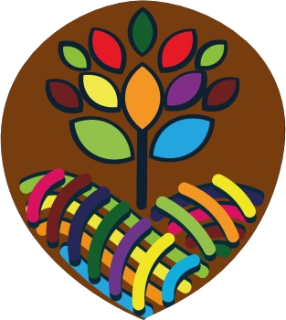
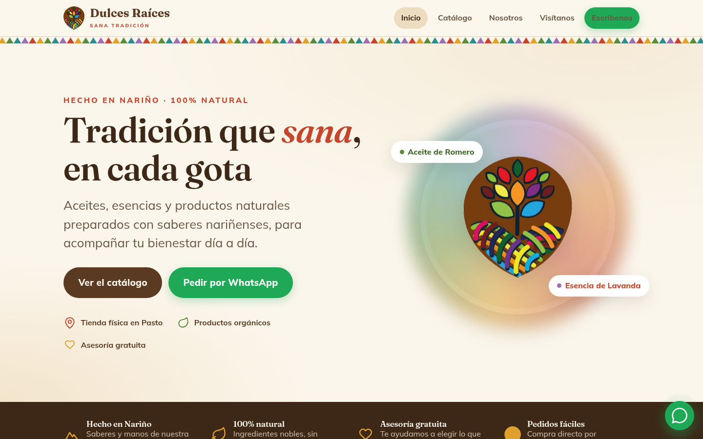
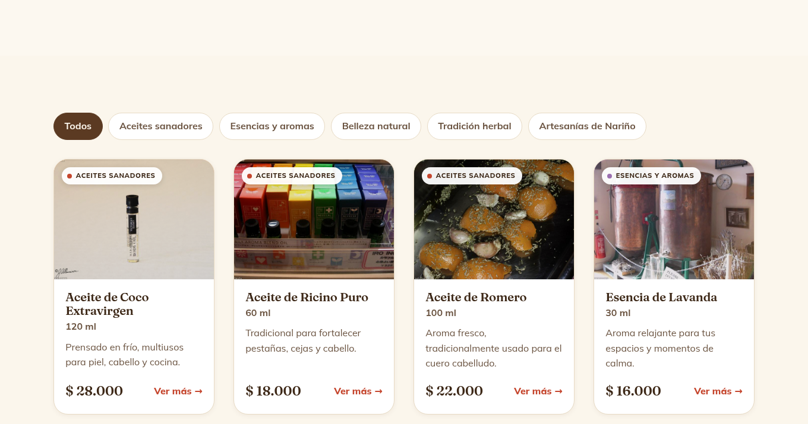

Propuesta de presencia digital
Más que una página web: un plan para que te encuentren, te conozcan y te elijan — sin perder el trato cercano que ya te caracteriza.
Lo que vemos hoy
Dulces Raíces tiene algo que el resto no tiene: identidad nariñense, tradición y productos naturales hechos a mano. Eso vale oro y es difícil de copiar.
El reto es simple: hoy te conoce, sobre todo, quien pasa por tu local o ya te tiene en WhatsApp. Cuando alguien busca “aceites esenciales en Pasto” en Google o en redes, te encuentra a otros, no a ti. Tu marca merece verse tan profesional como es.
La idea
Una página sola es como un local hermoso en una calle sin gente. Lo que de verdad necesitas —y lo que ya intuías al pensar en Google, Instagram y TikTok— es estar donde tu clienta te busca, las 24 horas, y que todo te lleve clientes por WhatsApp, que es el canal que ya manejas.
Cómo te ayudamos
Todo conectado, y todo apuntando a WhatsApp y a tu tienda física.
Quiénes somos, tus productos con foto y precio, y un botón para pedir por WhatsApp en cada uno. Con un solo enlace muestras todo tu catálogo.
Tu ficha en Google con ubicación, fotos, horario y reseñas. Para que aparezcas cuando buscan productos naturales en Pasto. Es gratis y de alto impacto.
Tus redes alineadas con la marca y conectadas a la página, para que la gente te conozca y te siga.
Mapa, dirección y “cómo llegar” bien visibles. Que internet te traiga gente también a tu puerta en Pasto.
Que llegue más gente
No basta con existir en internet; hay que ayudar a que te descubran.
Un primer vistazo
Una idea de diseño con tu marca: tus colores, tu árbol de la vida y el sello de “hecho en Nariño”. Pensada para verse muy bien en el celular, que es por donde llega la mayoría.


Paso a paso
Empezamos pequeño y seguro, y crecemos contigo.
| Etapa | Qué hacemos | Qué ganas |
|---|---|---|
| 1. Presencia | Tu página + ficha de Google + redes ordenadas. | Te encuentran, te ves profesional y vendes mejor por WhatsApp. |
| 2. Crecimiento | Contenido en redes, reseñas en Google, catálogo creciendo. | Más alcance en Pasto y Nariño, y una comunidad alrededor de tu marca. |
| 3. Tienda en línea | Pagos por internet y envíos, cuando el volumen lo pida. | Vendes tus esencias nariñenses a toda Colombia, no solo a quien pasa por tu local. |
Cómo trabajamos
Te acompañamos en cada paso y te explicamos todo en palabras sencillas. Tú te dedicas a lo que sabes —tus productos y tus clientes— y nosotros nos encargamos de lo técnico.
Para empezar, necesitamos de ti
La inversión
La conversamos juntos según las etapas que elijas. La idea es empezar por lo esencial, con una inversión cómoda, y crecer a medida que veas los resultados.
Con tu logo, tus fotos y tu historia, ponemos tu marca en internet y empezamos a que te encuentren.
Dulces Raíces · Carrera 29 #15-34, Bomboná · Pasto, Nariño · WhatsApp 322 890 4164